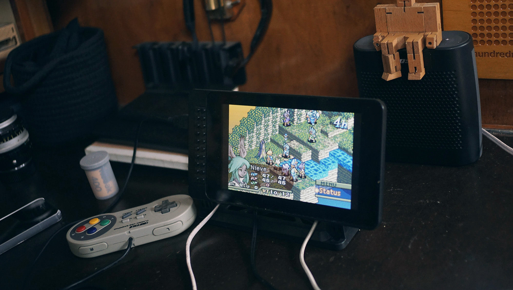
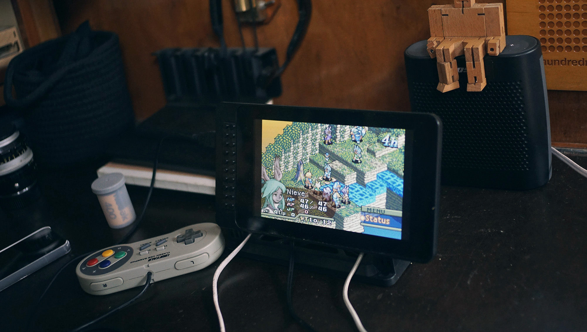

the game station
introduction
Our game station is a Retropie powered Raspberry Pi.
parts
link
If you like our content, consider supporting us.
PATREONOur game station is a Retropie powered Raspberry Pi.
If you like our content, consider supporting us.
PATREON